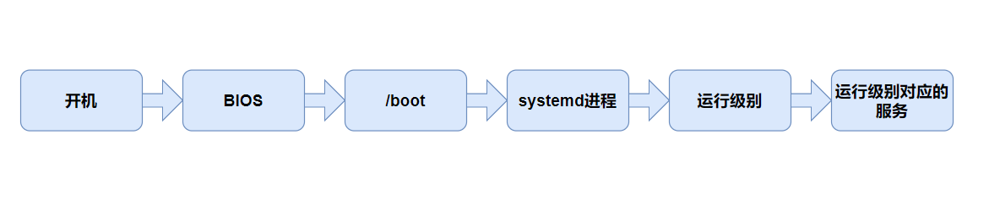
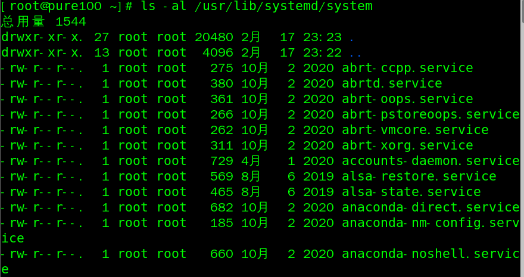
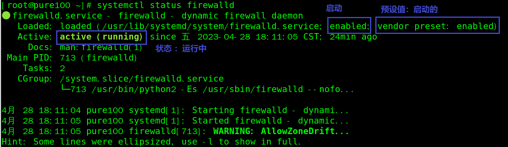
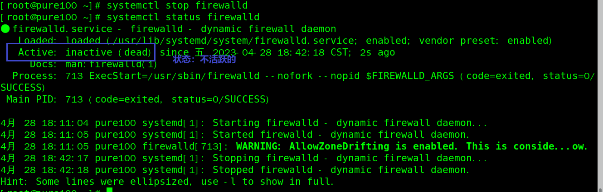
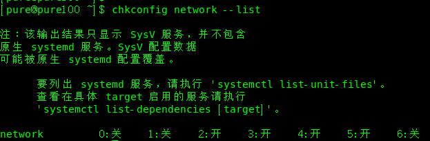
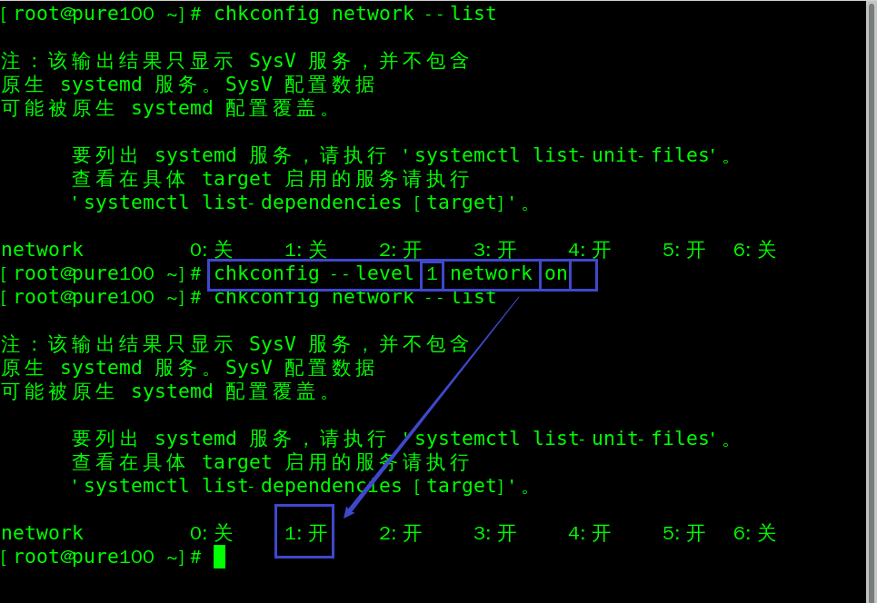
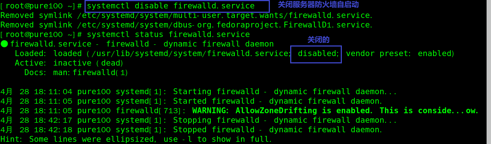

Linux基础-系统管理

文章目录
Linux系统启动时会启动很多系统服务进程，这些系统服务进程没有控制终端，不能直接和用户交互。其他进程都是在用户登录或运行程序时创建，在运行结束或用户注销时终止，但系统服务进程不受用户登录注销的影响，它们一直在运行着，这种进程有一个名称叫守护进程（Daemon）。
Linux中的进程和服务
- 计算机中，一个正在执行的程序或命令，被叫做“进程”( process)。
- 启动之后一直存在、常驻内存的进程，一般被称作 “服务”(service)。
- 守护进程也称精灵进程（Daemon），是运行在后台的一种特殊进程，它独立于控制终端并且周期性地执行某种任务或等待处理某些发生的事件。
系统运行级别
Linux开机启动流程图
这里先做一个简单了解

CentOS6的运行级别
Linux系统有7种运行级别(runlevel):
- 运行级别 0：系统停机状态，系统默认运行级别不能设为0，否则不能正常启动运行
- 运行级别 1：单用户工作状态，root权限，用于系统维护，找回丢失root密码，禁止远程登陆
- 运行级别 2：多用户状态没有网络服务(没有NFS)，不支持网络
- 运行级别 3：多用户状态有网络服务(有NFS)，登陆后进入控制台命令行模式
- 运行级别 4：系统未使用，保留给用户
- 运行级别 5：图形界面
- 运行级别 6：系统正常关闭并重启，默认运行级别不能设为6，否则不能正常启动
常用运行级别是3和5，工作中一般用3，也可以指定默认运行级别
CentOS7的运行级别
CentOS7 的运行级别简化为：
- multi-user.target 等价于原运行级别3（多用户有网，无图形界面）
- graphical.target 等价于原运行级别5（多用户有网，有图形界面）
服务管理
service 服务管理（CentOS 6 版本-了解）
-
基本语法
1service 服务名 start | stop | restart | status -
查看服务
查看
/etc/init.d目录，发现只有两个服务保留在service
-
实操案例
-
查看网络服务状态
1service network status -
停止网络服务
1service network stop -
启动网络服务
1service network start -
重启网络服务
1service network restart
-
systemctl服务管理（CentOS 7 版本-重点掌握）
-
基本语法
1systemctl start | stop | restart | status 服务名 -
查看服务
查看
usr/lib/systemd/sytem目录
-
实操案例
-
查看服务器防火墙状态
1systenctl status firewalld
-
启动/关闭/重启服务器防火墙
1 2 3systemctl start firewalld # 启动服务器防火墙 systemctl start firewalld # 关闭服务器防火墙 systemctl start firewalld # 重启服务器防火墙
-
设置后台自启动
chkconfig 设置后台服务的自启配置（CentOS 6 版本）
-
基本语法
1 2 3 4chkconfig # 功能描述：查看所有服务器自启配置 chkconfig 服务名 off # 功能描述：关掉指定服务的自动启动 chkconfig 服务名 on # 功能描述：开启指定服务的自动启动 chkconfig 服务名 --list # 功能描述：查看服务开机启动状态 -
实操案例
-
查看network(网络)服务开机启动状态
1chkconfig network --list
-
开启/关闭network(网络)服务的自启动服务
1 2chkconfig network on # 开启network(网络)服务的自启动服务 chkconfig network off # 关闭network(网络)服务的自启动服务 -
开启/关闭network(网络)服务指定级别的自动启动
1 2chkconfig --level 指定级别 network on chkconfig --level 指定级别 network off
-
systemctl 设置后台服务的自启配置
-
基本语法
1 2 3systemctl list-unit-files # 功能描述：查看服务开机启动状态 systemctl disable service_name # 功能描述：关掉指定服务的自动启动 systemctl enable service_name # 功能描述：开启指定服务的自动启动 -
实操案例
-
开启关闭iptable(防火墙)服务的自启动
1 2systemctl enable firewalld.service # 启动防火墙自启动 systemctl disable firewalld.service # 关闭防火墙自启动
-
文章作者 Pure3417
上次更新 2023-02-27